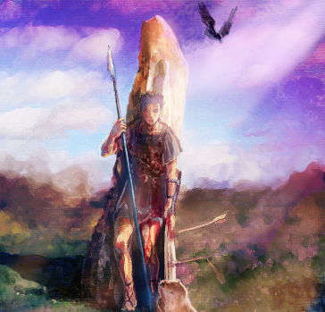

Cú Chulainn is a hero from the Ulster Cycle of Irish Mythology. He was the demigod son of Lugh, an important Irish god, and was the greatest warrior of his time.

Cú Chulainn's Origins
Cú Chulainn was from Ulster, which in the modern day is the northern nine counties of Ireland, and was born with the name Setanta. When he was a kid, Setanta was prophesied to have a glorious and short life. He also had an ability called ríastrad, which roughly translates to warp spasm. It caused his body to physically sontort with his rage into a terrifying form. While he was still a child, he ended up late to a gathering at the smith Culainn home and when he arrived, he was attacked by Culainn's guard hound. Setanta then used his hurley to hit a ball into the hound, which killed it. In return for killing his hound, Setanta agreed to protect Culainn's house until he got a new guard dog which gave Setanta the name Cú Chulainn which means 'hound of Culainn' in Irish Gaelic.

Cú Chulainn then trained on the Isle of Sky and Shadow under the warrior goddess Scathach. While he trained under her, Ferdia was also trained by Scathach and so Cú Chulainn and Ferdia became battle brothers. One of the things she taught them was how to use the Gae Bulg, which is a spear that if it hits the opponent, grows barbs through the person's body. After they trained under Scathach for a while, her evil twin sister Aífe returned to battle her so Scathach fed Cú Chulainn and Ferdia a potion that would put them to sleep for a day. However, Cú Chulainn was able to sleep the potion off in only an hour and joined the fight against Aífe. Cú Chulainn ends up being the one to land the final blow against Aífe and he made her renounce her feud with Scathach.
The Cattle Raid of Cooley
The Cattle Raid of Cooley was a conflict where Queen Medb of Connacht, the central west part of Ireland, invaded Ulster to capture the Brown Bull of Cooley due to how much it was worth. At the beginning of the battle all the men of Ulster were affected by a curse that would make them feel the pain of labor in their greatest hour of need, though Cú Chulainn was unaffected by it as since he was 17, he wasn't a man yet. The men of Ulster were cursed because the King of Ulster made a pregnant goddess run a foot race against horses so she cursed them in response. And so Cú Chulainn faught the army alone. Eventually he became exhausted, so his father, the god Lugh, knocked him out and healed him. However, while he was asleep, the warrior boys of Emain Macha who fought the army while Cú Chulainn was healed were slaughtered. This caused Cú Chulainn to warp spasm and kill many of Queen Medb's forces. Cú Chulainn was then forced to fight his battle brother Ferdia as he was part of Queen Medb's army, which was a long battle that ended with Cú Chulainn being forced to kill Ferdia using the Gae Bulg. After that, the curse on the men of Ulster was lifted and they beat Queen Medb's army as Cú Chulainn mourned his battle brother's death.

The Death of Cú Chulainn
During his life, Cú Chulainn met The Morrígan, Irish goddess of war and fate. She wanted him to cheat on his wife with her, however Cú Chulainn rejected her. Because of this, she later disguised herself as an old lady and made Cú Chulainn eat dog meat, which weakened him. Cú Chulainn's enemies used this weakness to their advantage, with them throwing three magical spears. The first killed his charioteer, the second killed the horse pulling the chariot, and the final one landed a mortal wound on Cú Chulainn. So, Cú Chulainn tied himself to a large rock with his own intestines and his belt so that he would die on his feet. His enemies surrounded the rock, though none approached him until a raven landed on his shoulder, confirming he was dead. However, when someone approached his corpse to cut off Cú Chulainn's head, a bright light shines from his body before Cú Chulainn's sword comes down, cutting off the arm of the guy about to take Cú Chulainn's head.
